Linux Fundamentals (HTB)
Overview
Personal notes from the HackTheBox Linux Fundamentals module covering core concepts, terminal commands, file system structure, user management, and advanced administration.
Start readingPersonal notes from the HackTheBox Linux Fundamentals module covering core concepts, terminal commands, file system structure, user management, and advanced administration.
Start readingScroll sideways for more columns
Name | Definition | What it is |
|---|---|---|
bin | Binaries | Contains command binaries ( ls, rm, cp etc.. ) |
sbin | Superbin | Contains command binaries that requires privileged role or sudo ( adduser etc ) |
usr | User | user directory which has command binaries for users |
local | local | Where you should store custom created binaries |
lib | libraries | Libraries that are shared by command binaries |
boot | boot | Files that your system needs to boot |
var | var | log files and web app related files |
tmp | temporary | temporary files which in most cases will be erased on reboot |
home | home | Where you live basically along with other users |
root | root | Where the root lives hidden from the public |
dev | devices | Devices in our system vda1 and vda are virtual harddrives in our system |
etc | etcetera | configuration files of system |
etc/network | network | Network files |
media | media | When you plug in a USB thumb drive to linux, the usb drive will be automounted to media directory |
mnt | mount | Manually mounted drives shows up in this directory |
opt | optional | optional files like third-party tools can be saved here |
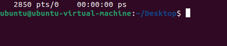
Scroll sideways for more columns
Command | Definition | What it does | Example |
|---|---|---|---|
ctrl + l or clear | clear | Clears screen | clear |
man {Command name} -h {Command name} --help whatis {Command name} | manual help | (Literally Linux User Manual )explanation on what the command does ( spacebar reads through pages ) same as man but less novel like and more on point | $man ls S(1) User Commands LS(1) NAME ls - list directory contents SYNOPSIS ls [OPTION]... [FILE]... DESCRIPTION List information about the FILEs (the current directory by default). Sort entries al‐ phabetically if none of -cftuvSUX nor --sort is specified. |
apropos | apropos | Searches the manual and description to find something that matches ( commands mostly ) | $ apropos ls lsns (8) - list namespaces lsof (8) - list open files lspci (8) - list all PCI devices |
Pwd | Print Working Directory | Show full path of where we are rn | $ pwd /home/htb-ac566684 |
ls | list | lists the content of the directory where we are rn | $ ls Desktop Documents Downloads Templates |
ls -l or ll | list vertically | lists the content of the directory with details like type, no of links, owner, group, size etc See : 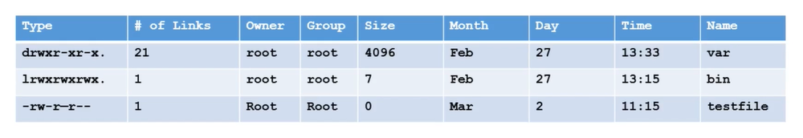 | $ ls -l drwxr-xr-x. 2 centos centos 6 Dec 25 05:52 Desktop |
ls -ltr | list vertically, sort by date modified | $ ls -ltr Same as ls -l but sort will be based on date modified oldest to newest | |
ls -ltr | more | list vertically show the list one page at a time | Pipes ( | ) help to combine two commands in a way that one feed into the other. In this example ls -ltr displays the files in a directory. But what if there are 1000s of files in that directory? Thats why the ls command is feeding into more command in this case. So this will diplay 1 page of files at a time. You can hit spacebar to go down one page and q to exit midway if required. | |
cd | change directory | Change the working directory to what is specified Also used to go back one directory Pro tip : if you use this command alone. It will take you to the home directory of the user. | $ cd Desktop $ pwd /home/htb-ac566684/Desktop $ cd .. $ pwd /home/htb-ac566684 |
whoami | who am shows | Shows who we are logged in as | $ whoami htb-ac566684 |
cat | concatenate | Output the content of any file in the terminal | $ cat ls edfgwewefkkmapsasds |
touch | Create a file | Creates a blank file | $ touch filename1 filename2 ..... filename99 |
vi | Visual editor | Text editor to create files Imp : to exit editor click :wq! | $ vi filename |
sudo | Superuser do | More like a run as Admin privilege settings | $sudo cp ls newfile |
adduser | Add User | Creates a new user with the specified filename | $ sudo adduser Username |
which | which | Tells the location of the command binary that is specified | $ which sudo /usr/bin/sudo |
ps | process status | Lists the processes running in your linux and also tells you the status Pro Tip : Ps command and grep command exist in combined form in linux ie : $pgrep firefox The output will return the process id of firefox | $ ps PID TTY TIME CMD 2510 pts/0 00:00:00 bash 2850 pts/0 00:00:00 ps $ps -u username Lists Processes running in the specified user account |
exit | exit | Exit from root privileges | $ sudo su [sudo] password for ubuntu: root@ubuntu-virtual-machine:/home/ubuntu/Desktop# exit ubuntu@ubuntu-virtual-machine:~/Desktop$ |
id | id | tells you all about you (as a user ) | $ id uid=1000(ubuntu) gid=1000(ubuntu) groups=1000(ubuntu),4(adm),24(cdrom),27(sudo),30(dip),46(plugdev),122(lpadmin),134(lxd),135(sambashare) |
hostname | hostname | Outputs the hostname | $ hostname ubuntu-virtual-machine |
uname uname -r uname -a | uname uname -r uname -a | Output the Kernal that is used Outputs the Distribution name and version Lists everything | $ uname Linux $ uname -r 5.15.0-43-generic $ uname -a Linux ubuntu-virtual-machine 5.15.0-43-generic #46-Ubuntu SMP Tue Jul 12 10:30:17 UTC 2022 x86_64 x86_64 x86_64 GNU/Linux |
ifconfig | ifconfig | List network details | $ ifconfig ens33: flags=4163<UP,BROADCAST,RUNNING,MULTICAST> mtu 1500 inet 192.168.155.129 netmask 255.255.255.0 broadcast 192.168.155.255 inet6 fe80::6b7:96a0:8ff8:970a p.......... |
ip | ip | More network stuff | $ip Usage: ip [ OPTIONS ] OBJECT { COMMAND | help } ip [ -force ] -batch filename where OBJECT := { address | addrlabel | fou | help | ila | ioam | l2tp | lin......... |
netstat | net status | Network Status | $ netstat Active Internet connections (w/o servers) Proto Recv-Q Send-Q Local Address Foreign Address State udp 0 0 ubuntu-virtual-m:bootpc 192.168.155.254:bootps ESTAB...... |
ss | session status | Session data | $ ss Netid State Recv-Q Send-Q Local Address:Port Peer Address:Port Process u_dgr ESTAB 0 0 /run/systemd/notify 28....... |
who | who | who else is logged into the system | $ who ubuntu tty2 2022-08-10 00:11 (tty2) |
env | environment variables | $ env SHELL=/bin/bash SESSION_MANAGER=local/ubuntu-virtual-machine:@/tmp/.ICE-unix/1806,unix/ubuntu-virtual-machine:/tmp/.ICE-unix/18 | |
lsblk | List blocks | Hard drive stuff | $ lsblk NAME MAJ:MIN RM SIZE RO TYPE MOUNTPOINTS fd0 2:0 1 4K 0 disk loop0 7:0 0 4K 1 loop /snap/bare/5 loop1 7:1 0 61.9M 1 loop |
lsusb | List USB | Are there any USBs plugged in | $ lsusb Bus 001 Device 001: ID 1d6b:0002 Linux Foundation 2.0 root hub Bus 002 Device 004: ID 0e0f:0008 VMware, Inc. Virtual Bluetooth Adapter Bus 002 Device 003: ID 0e0f:0002 VMware, Inc. Virtual USB Hub |
lsof | List Open Files | Lists all the open files | $ lsof dg-deskt 2278 2281 dconf\x20 ubuntu mem REG 8,3 1296312 1056178 /usr/lib/x86_64-linux-gnu/libgcrypt.so.20.3.4 xdg-deskt 2278 2281 dconf\x20 ubuntu mem REG 8,3 39024 1055889 /usr/lib/x86_64-linux-gnu/libcap.so.2.44 |
Scroll sideways for more columns
vi | Text editor | |
> or >> | Redirect Command output | $cat pingresult.txt |
echo > or echo >> | Echo everything you type to a file cat can be used to read the content of the file | $echo " hello world " > Output $cat Output hello world |
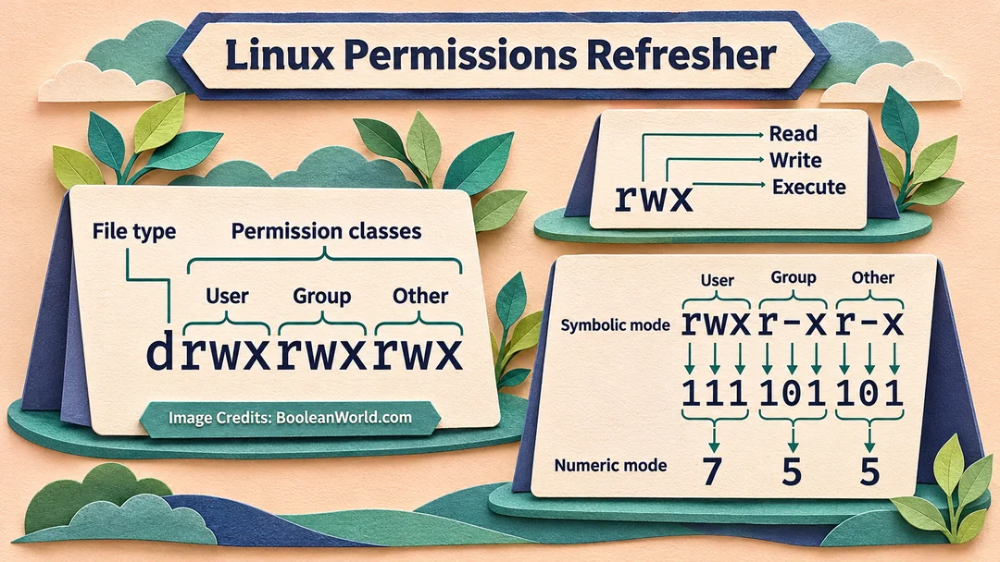
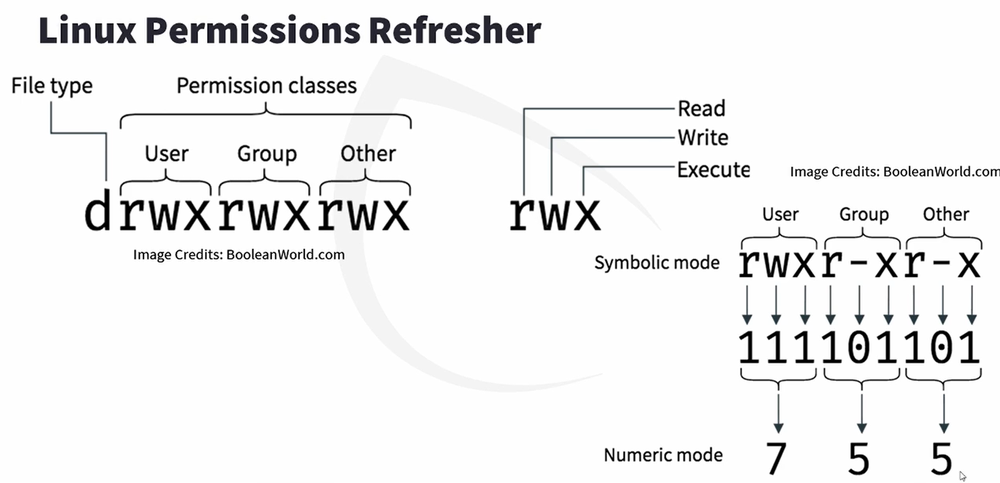
Scroll sideways for more columns
Scroll sideways for more columns
cat | Displays the content of the file | $cat filename |
more | Displays big files in a page by page form ( spacebar helps in going to next page ) (q can be used to quit view ) | $more filename.txt |
less | Displays big files in a page by page form but in reverse order ( spacebar helps in going to next page )( J can be used to view one line at a time ) | $less filename.txt |
head | prints first specified number of lines of data of a file ( head -10 will print first 10 lines ) | $head -2 filename.txt Displays the first two lines of data from filename.txt |
tail | prints last specified number of lines of data of a file ( tail -10 will print first 10 lines ) | $tail -2 filename.txt Displays the last two lines of data from filename.txt |
Scroll sideways for more columns
cut | Cuts and displays specified character in a line of file. | $cat Marvel.txt Spiderman Captain Amarica Iron Man Thor $cut -c1 Marvel.txt S C I T Here -c1 means cut the first character of each line. |
awk | Seperates Each column per line of a file. Pro Tip : You can use Pipes here as an alternate way to run the command ie : $cat Marvet.txt | awk '{print $1}' | $cat Marvel.txt Spiderman Captain Amarica Iron Man Thor $awk '{print $1}' Marvel.txt Spiderman Captain Iron Thor Here '{print $1}' means print the first column only |
grep | Search for a word in a file. Same as Ctrl + F in Windows Note : The command is case sensitive. | $grep Man Characters.txt Iron Man Spiderman |
sort | Sorts the content in alphabetical older or watever you specify To do reverse alphabetical, use : $sort -r Characters.txt | $sort Characters.txt Captain America Iron Man Spiderman Thor |
uniq | Remove all duplicates from the file | $cat Names.txt Adam Alice Adam Adam Kramer $cat Names.txt | sort | uniq Adam Alice Kramer |
wc | word count of a file The Output will be 3 Parts :
| $ wc Characters.txt 27 36 257 Characters.txt To display only the no of lines use : $cat Characters.txt | wc -l |
Scroll sideways for more columns
$cat /etc/redhat-release | Tells you the OS version | $cat /etc/redhat-release CentOS Linux release 7.9.2009 (Core) |
$uname -a | Information about the OS | $uname -a Linux localhost.localdomain 3.10.0-1160.81.1.el7.x86_64 #1 SMP Fri Dec 16 17:29:43 UTC 2022 x86_64 x86_64 x86_64 GNU/Linux |
$dmidecode | Desktop Management Interface Decode ie A Lot of hardware and software information $hostname gives host info | $dmidecode dmidecode 3.2 Getting SMBIOS data from sysfs. SMBIOS 2.7 present. 620 structures occupying 28932 bytes. Table at 0x000E0010. Handle 0x0000, DMI type 0, 24 bytes BIOS Information Vendor: Phoenix Technologies LTD Version: 6.00 Release Date: 11/12/2020 Address: 0xEA480 Runtime Size: 88960 bytes ROM Size: 64 kB Characteristics: ISA is supported PCI is supported PC Card (PCMCIA) is supported PNP is supported APM is supported BIOS is upgradeable BIOS shadowing is allowed ESCD support is available Boot from CD is supported Selectable boot is supported EDD is supported Print screen service is supported (int 5h) 8042 keyboard services are supported (int 9h) Serial services are supported (int 14h) Printer services are supported (int 17h) CGA/mono video services are supported (int 10h) ACPI is supported Smart battery is supported BIOS boot specification is supported Function key-initiated network boot is supported Targeted content distribution is supported BIOS Revision: 4.6 Firmware Revision: 0.0................................................ |
Scroll sideways for more columns
Command | Purpose | Application |
|---|---|---|
adduser | Used to Create a new user ( the hard way ). Asks for Password, Details and stuff. | $ sudo adduser thor |
useradd | Just creates user with the specified username. | $ sudo useradd ironman -m = create home directory for the user |
passwd | Set the password for a user | $ sudo passwd ironman |
usermod | User Modification
Shell changed from ssh to bash | $ sudo usermod ironman --shell /bin/bash ( change shell to bash ) |
Name change to tonystark from ironman | $ sudo usermod -l tonystark ironman | |
Adds spiderman user to superheroes group | $usermod -G superheroes spiderman | |
su | switch to another user | $ su - ( switch you to root user ) username ( switch you to the specified username |
sudo groupadd | Adds a new group | $ sudo groupadd infinity gauntlet To verify, use cat /etc/group Note : When users are created, groups are automatically created with the same name. |
groups | Shows the group which you belong to | $groups group1 sudo |
userdel | Delete user | $sudo userdel thanos |
userdel -r | Delete user and its home directory | $sudo userdel -r thanos |
groupdel | Delete group | $sudo groupdel infinitygauntlet |
useradd -g superheroes -s /bin/bash -c "user description" -m -d /home/spidermand spiderman | This command does everything at once :
|
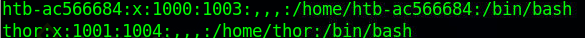
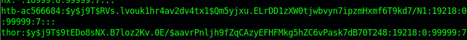
Scroll sideways for more columns
su - username | Switch user to the username specified | |
sudo | Used to run certain commands without root privleges | |
visudo | Edits /etc/sudoers file to changes the configurations to allow the user to add or remove rights to run certain commands | Note : Scroll to the bottom of the sudoers files and you can see sections specifying a group called wheel. This means if you add a specific user to the wheel group, they have all the permissions as specified in the sudoers file. Similarly you can add your own group below if required. Additionally right below the section which has root mentioned, you can add individual users so that they have root privileges. |
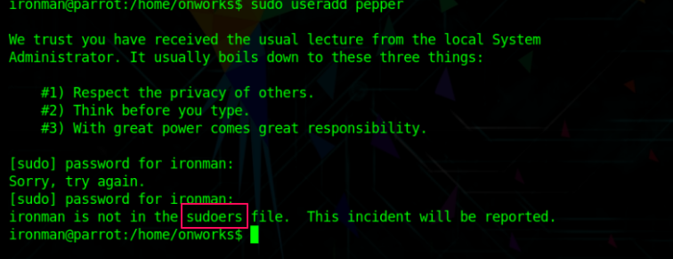
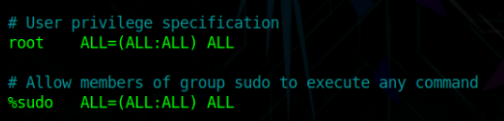
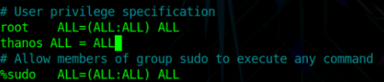
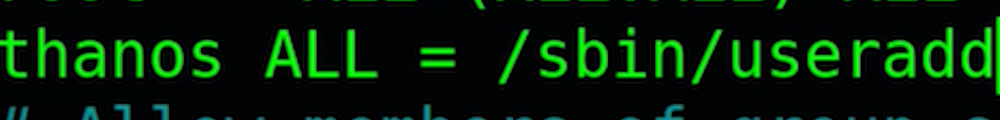
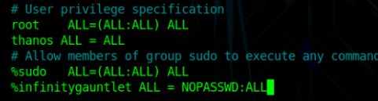
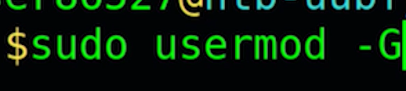
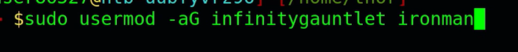
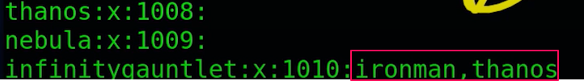
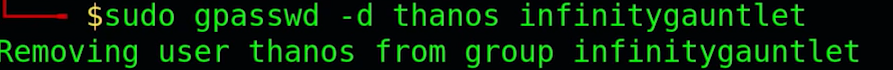
Scroll sideways for more columns
date | Displays date time day time zone etc | |
uptime | System info such as runtime, active users, load etc | 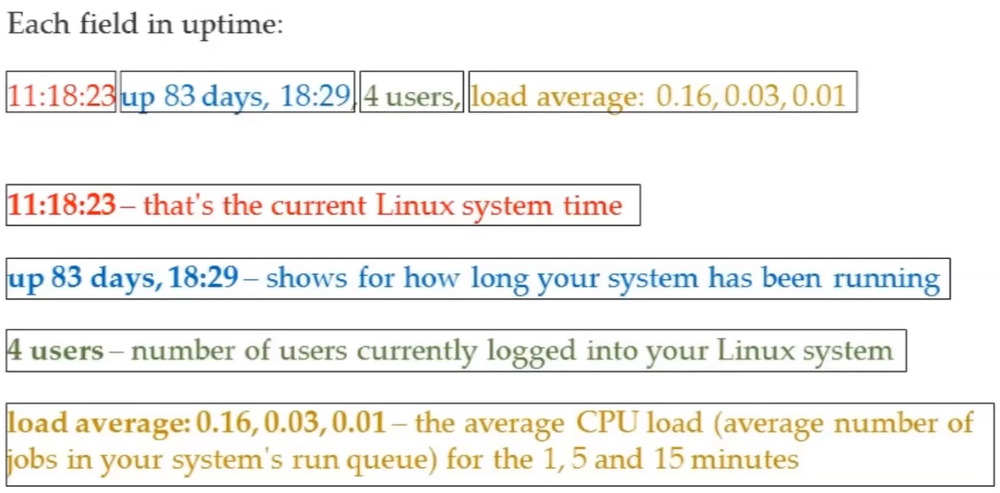 |
hostname | Displays hostname of Linux | |
uname | OS kernal name | $uname Linux |
uname -a | More detailed version of uname | |
which | Find command location | $which pwd /usr/bin/pwd |
cal | Calendar of the current month if you specify month and year, you can get the calendar of the specified month Or specify year only to see all calendars of the year | $cal 5 1998 Displays the calendar of May 1998 |
bc | Binary calculator | Opens the calculator that can do basic math like add,subtract,multiply,divide etc |
Scroll sideways for more columns
systemctl / service | Control the systemd system and service manager | #systemctl restart ntpd or #systemctl start ntpd Starts Ntpd service NTP or Network Time Protocol is a networking protocol for clock sync btween computer systems. d used in the command is because it is a Deamon. #systemctl status ntpd Shows the status and details of ntpd ( whether it is actively running, process id, etc.. ). #systemctl stop ntpd Stops the process specified. Ntpd in this case. #systemctl enable ntpd Enables Ntpd service. |
ps | Lists the processes | #ps -ef Lists all the processes running #ps -ef | grep ntpd Filters out ntpd processes. |
top | Processes running in ur system is displayed based on what you want to see it first ( for example based on load ) | #top System statistics of processes, their consumption of PC resources etc. Same as Windows Task Manager's usage statistics page. $htop displays humanized version |
kill | Kills the process by process id or process name | #kill processid / #kill 12027 Kills the process with the respective ID. |
crontab | Used to schedule services and processes in ur system. In simple terms this is the command that creates Jobs. | $crontab -e Opens Crontab in Vi edit mode Change to insert mode by using i on the keyboard In Insert mode type : 22 13 * 3 * echo " This is an example of Cronjob " > Cron.txt Here 22 is the Minute, 13 is the hour in 24hr format. " * (star) " represents everyday , 3 means third month and the next * represents every year. So the text you typed in insert mode translates to : At 1:22PM everyday for the Month of March every year, Create a text file " Cron.txt " and inside the file write the text " This is an example of Cronjob ". To summerize, this basically schedules a task that is automatically performed by the system when the specified conditions are met. The task in this context is creating the file with the text content. Similarly crontab can be used to schedule a variety of tasks. |
at | Same as crontab but scheduled as a one time or adhock process |
Scroll sideways for more columns
shutdown | power-off or reboot the machine | $shutdown |
init 0-6 | ||
reboot | ||
halt | Force Shutdown |
Scroll sideways for more columns
top | Hardware usage information like CPU consumption, memory consumption etc | $top |
df | Disk Partition Inforamtion / Disk Usage information | $df $df -h Gives Disk Usage information in a user friendly format |
du | Estimate file space usage Displays disk usage on file by file basis. | $du $du -h Gives File Usage information in a user friendly format |
dmesg | Gives output of system system related warnings, error messages, failures etc | $dmesg |
iostat | Input and Output Statistics + CPU Statistics / Whats coming in and whats going out of the system in terms of communications. | $iostat 1 Refresh I/O statistics every one second You can specify any timeframe for refresh. |
netstat | Print network connections, routing tables, interface statistics etc. | $netstat $netstat -rnv Displays the most essential info only ( like IP, Gateway,Netmask,Flags,Interface etc ) |
free | Displays Physical memory and Virtual memory info and its usage | |
cat /proc/cpuinfo | Displays the file containing CPU information | |
cat /proc/meminfo | Displays the file containing Memory Information |
Scroll sideways for more columns
ifconfig | Gives Information about Network Intefaces that are active on your system. | The command displays information such as :
|
ping | Transfers sample packets to a specified domain/IP to verify if it is active and capable of communication | $ping google.com Will display the data of packets transferred to google.com and as an end result shows the success rate as in how many of the packets sent is successfully recieved at google.com and what percentage of packets failed to reach the destination. |
ifup or ifdown | Turn on or off an interface | $ifup nicname |
netstat | Print network connections, routing tables, interface statistics etc. | $netstat $netstat -rnv Displays the most essential info only ( like IP, Gateway,Netmask,Flags,Interface etc ) |
tcpdump | Packet analysis/sniffing tool | $tcpdump -i enp0s3 Captures all packets entering and leaving 'enp0s3' interface. |
Scroll sideways for more columns
yum | $yum install ntp system wil update if a new version of ntp exists. If not it will display that the latest verions is already installed. $yum remove ntp Removes the NTP package. |
rpm | $rpm -qa Queries all the packages installed in the system. This can be used to verify if a package you want to install is already installed in the system. $rpm -hiv /hom/centos/package.rpm This install the package from the specified location $rpm -e packagename This will uninstall the specified package. Please note that you have to use the entire name of the package as seen in the output of $rpm -qa command |
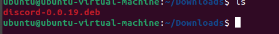
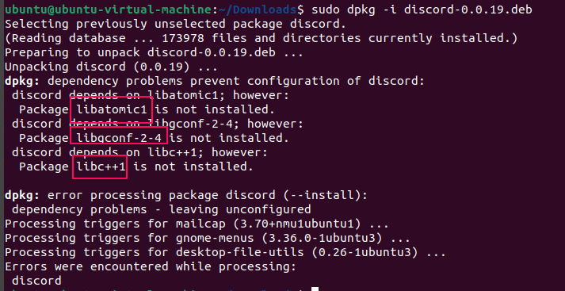
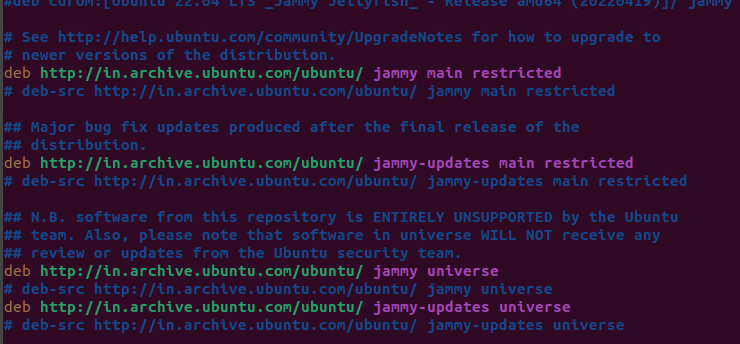
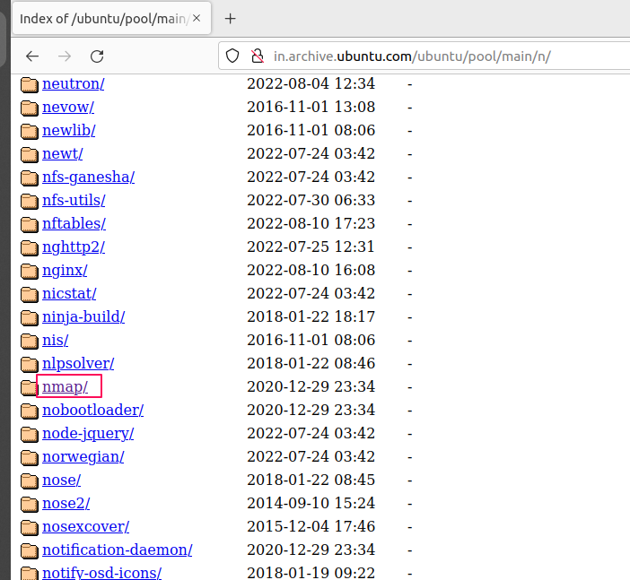
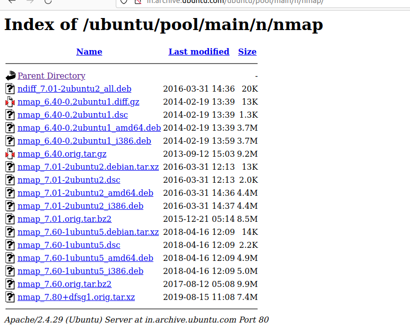
Scroll sideways for more columns
apt list apt list --installed apt list --installed | grep ^nmap | lists all the available packages to see what your system is installed with Search the list of installed packages to find nmap |
apt show nmap | Shows the details of nmap |
apt search nmap | Searches the discription of a lot of stuff and shows you matching results |
apt remove pidgin | Removes the specified sotware (Pidgin in this case). This command removes the app but not the user data. So basically it acts like a safe command. If you accidently deleted an app. You can reinstall and get back on it without skipping a beat. Cus the data is saved. |
apt purge pidgin | Removes everything ( including user data ). To verify removal use the apt list command including the search. |
apt upgrade apt full-upgrade | Updates the packages if an update is available. Make the process quick by using 2 commands together ie : sudo apt update && apt upgrade. && here is used to run 2 commands in one line. Full upgrade removes old versions of things which arent required anymore. |
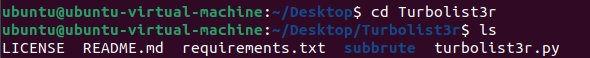